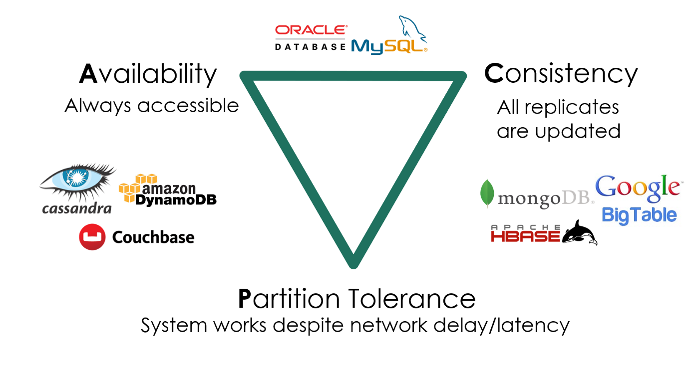

真实世界的并发编程
本讲内容：(本次课为科普，不需要掌握相关编程技术) 并发编程模型与底层同步机制的封装
- 高性能计算中的并行编程 (embarrassingly parallel 的数值计算)
- 数据中心中的并发编程 (协程、Goroutine 和 channel)
- 人工智能时代的分布式机器学习 (GPU 和 Parameter Server)
- 用户身边的并发编程 (Web 和异步编程)
高性能计算中的并行编程
(经典) 高性能计算
“A technology that harnesses the power of supercomputers or computer clusters to solve complex problems requiring massive computation.” (IBM)
源自数值密集型科学计算任务
- 物理系统模拟
- 天气预报、航天、制造、能源、制药、……
- 大到宇宙小到量子，有模型就能模拟
- 矿厂 (现在不那么热了)
- 纯粹的 hash 计算
- HPC-China Top 100
高性能计算程序：特点
物理世界具有 “空间局部性”：按空间划分任务
- 一切 “模拟物理世界” 的系统都具有 embarrassingly parallel （易并行计算）的特性

高性能计算：关键问题
问题 1：计算任务如何分解
- 通常计算图容易静态切分 (机器-线程两级任务分解)
- 生产者-消费者解决一切
- MPI - “a specification for the developers and users of message passing libraries”
- OpenMP - “multi-platform shared-memory parallel programming in C/C++ and Fortran”
- Parallel and Distributed Computation: Numerical Methods
问题 2：海量线程之间的如何同步和通信
- 持久存储 (~PB) → CPU/内存 (~TB) → GPU/显存 (~10GB) → 缓存 (~MB)
数据中心里的并发编程
数据中心程序：特点
“A network of computing and storage resources that enable the delivery of shared applications and data.” (CISCO)
以数据 (存储) 为中心
- 互联网索引与搜索
- Google / Bing
- 社交网络
- Facebook/Twitter
- 支撑各类互联网应用
- 通信 (微信/QQ)、支付 (支付宝)、游戏/网盘/……
数据中心：关键问题
如何实现高可靠、低延迟的多副本分布式存储和计算系统？
- 在服务海量地理分布请求的前提下，三者不可兼得：
- 数据要保持一致 (Consistency)
- 服务时刻保持可用 (Availability)
- 容忍机器离线 (Partition tolerance)

数据中心程序上的单机程序
事件驱动 + 高并发：系统调用密集且延迟不确定
- 网络数据读写
- 持久存储读写
- 单机程序目标：尽可能多地服务并行的请求
- QPS：吞吐量
- Tail latency：一个请求慢了，其他请求不能慢
假设有数千/数万个请求同时到达服务器……
- 线程能够实现并行处理
- 但远多于处理器数量的线程导致性能问题
- 切换开销 / 维护开销
协程：操作系统 “不感知” 的上下文切换
和线程概念相同 (独立堆栈、共享内存)
- 但 “一直执行”，直到
yield()主动放弃处理器 - 有编译器辅助，切换开销低
- yield() 是函数调用，只需保存/恢复 “callee saved” 寄存器（更少的寄存器）
- 线程切换需要保存/恢复全部寄存器
- 但等待 I/O 时，其他协程就不能运行了……
- 失去了并行
// 只可能是 1122 或 2211
void T1() { send("1"); send("1"); yield(); }
void T2() { send("2"); send("2"); yield(); }
Go 和 Goroutine
Go: 小孩子才做选择，多处理器并行和轻量级并发我全都要！
Goroutine: 概念上是线程，实际是线程和协程的混合体
- 每个 CPU 上有一个 Go Worker，自由调度 goroutines
- 执行到 blocking API 时 (例如 sleep, read)，Go Worker 偷偷改成 non-blocking 的版本
- 成功 → 立即继续执行
- 失败 → 立即 yield 到另一个需要 CPU 的 goroutine
- 太巧妙了！CPU 和操作系统全部用到 100%
例子：Fibonacci number from The Go Programming Language (ch 9.8)
Go 语言中的同步
Do not communicate by sharing memory; instead, share memory by communicating. ——Effective Go
共享内存 = 万恶之源
- 信号量/条件变量：实现了同步，但没有实现 “通信”
- 数据传递完全靠手工 (没上锁就错了)
但 UNIX 时代就有一个实现并行的机制了
cat *.txt | wc -l- 管道是一个天然的生产者/消费者！
- 为什么不用 “管道” 实现协程/线程间的同步 + 通信呢？
- Channels in Go
人工智能时代的分布式机器学习
NVIDIA DGX H100: 3,958 TFLOPS FP16 Tensor @ 700W ref. CRAY-1: 138 MFLOPS @ 115kW
机器学习：既计算密集，又数据密集
GPT-3: Language models are few-shot learners
-
Transformer 架构
-
175B 参数 (~300GB VRAM, FP-16)
-
GPT-3 single training run cost: ~$5,000,000
-
美国人断供芯片 = 三体人行为
-
320TB 语料
- 相比图片和视频，还是小弟弟
并行化：Dependency Graph is All You Need
计算密集部分 (1)：SIMT
Single Instruction, Multiple Threads
- 一个 PC，控制 32 个执行流同时执行
- 逻辑线程可以更多
- 执行流有独立的寄存器
- x,y,z 三个寄存器用于标记 “线程号”，决定线程执行的动作
计算密集部分 (2)：SIMD
Single Instruction, Multiple Data
- Tensor 指令 (Tensor Core)：混合精度 A×B+C
- 单条指令完成 4×4×4 个乘法运算
计算密集部分 (3)：堆更多的处理单元！
GH100 Spec
- 144 SMs
- 18432 CUDA Cores (并行的 Threads)
- AVX512: 512bits = 16 x Float32
- 576 Tensor Cores (4 per SM)
- 6 HBM3 or HBM2e stacks
- 12 512-bit memory controllers
- 60 MB L2 cache
这只是一个 GPU
- 显存/缓存决定了 GPU 内堆处理器的上限
- 但我们可以有多台机器、每个机器有多台 GPU！
分布式机器学习
高性能计算 (GPU) + 数据中心计算
用户身边的并发编程
Web 2.0 时代 (1999)
人与人之间联系更加紧密的互联网
- “Users were encouraged to provide content, rather than just viewing it.”
- 你甚至可以找到一些 “Web 3.0”/Metaverse 的线索
是什么成就了今天的 Web 2.0?
- HTML (DOM Tree) + CSS = 终端世界
- 通过 JavaScript 可以改变它
- 通过 JavaScript 可以连接数据中心
- Ajax (Asynchronous JavaScript + XML) 和
$ - 例子：Jupyter Notebook
人机交互程序：特点和主要挑战
特点：不太复杂
- 既没有太多计算
- DOM Tree 也不至于太大 (大了人也看不过来)
- DOM Tree 怎么画浏览器全帮我们搞定了
- 也没有太多 I/O
- 就是一些网络请求
挑战：程序员多
- 零基础的人你让他整共享内存上的多线程
- 恐怕我们现在用的到处都是 bug 吧？？？
- 框架：不用怕，有我在
- AI: 不用怕，有我在
单线程 + 事件模型
尽可能少但又足够的并发
- 一个线程、全局的事件队列、按序执行 (run-to-complete)
- 耗时的 API (Timer, Ajax, ...) 调用会立即返回
- 条件满足时向队列里增加一个事件
$.ajax(
{
url: 'https://jyywiki.cn/hello/jyy',
success: function(resp) {
console.log(resp);
},
error: function(req, status, err) {
console.log("Error");
}
}
);
异步事件模型
好处
- 并发模型简单了很多
- 函数的执行是原子的 (不能并行，减少了并发 bug 的可能性)
- API 依然可以并行
- 适合网页这种 “大部分时间花在渲染和网络请求” 的场景
- JavaScript 代码只负责 “描述” DOM Tree
坏处
- Callback hell (祖传屎山)
$.ajax嵌套 5 层，可维护性已经接近于零了
异步编程：Promise
导致 callback hell 的本质：人类脑袋里想的是 “流程图”，看到的是 “回调”。
Promise: 流程图的构造方法 (Mozilla-MDN Docs)
- The Promise object represents the eventual completion (or failure) of an asynchronous operation and its resulting value.

Promise: 描述 Workflow 的 “嵌入式语言”
Chaining
loadScript("/article/promise-chaining/one.js")
.then( script => loadScript("/article/promise-chaining/two.js") )
.then( script => loadScript("/article/promise-chaining/three.js") )
.then( script => {
// scripts are loaded, we can use functions declared there
})
.catch(err => { ... } );
Fork-join
a = new Promise( (resolve, reject) => { resolve('A') } )
b = new Promise( (resolve, reject) => { resolve('B') } )
c = new Promise( (resolve, reject) => { resolve('C') } )
Promise.all([a, b, c]).then( res => { console.log(res) } )
Async-Await: 一种计算图的描述语言
async function
- 总是返回一个
Promiseobject async_func()- fork
await promise
await promise- join
A = async () => await $.ajax('/hello/a')
B = async () => await $.ajax('/hello/b')
C = async () => await $.ajax('/hello/c')
hello = async () => await Promise.all([A(), B(), C()])
hello()
.then(window.alert)
.catch(res => { console.log('fetch failed!') } )
课后习题/编程作业
1. 阅读材料
教科书 Operating Systems: Three Easy Pieces
- 第 33 章 - Event-based Concurrency